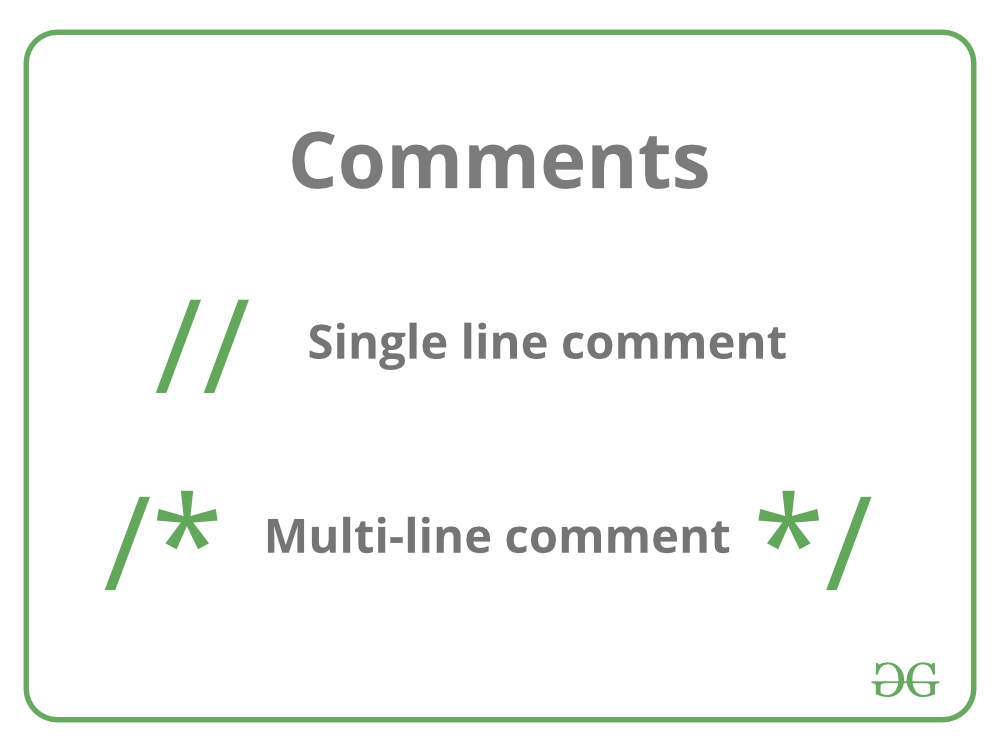

Comment in C and C++
A well-documented program is a good practice as a programmer. It makes a program more readable and error finding become easier. One important part of good documentation is Comments.
In computer programming, a comment is a programmer-readable explanation or annotation in the source code of a computer program
Comments are statements that are not executed by the compiler and interpreter.
In C/C++ there are two types of comments :
1. Single line comment
2. Multiline Comment

Process
Let’s say that the C compiler uses a traditional preprocessor phase, which runs before any other phase of compilation. In this scenario, the preprocessor looks at each character in the source file in sequence, and detects the start of a comment, either /* or //. When it does, it continues to consume source file characters, throwing them away until it encounters either a */ (if it’s currently consuming a block comment) or the end of line character (if it’s currently consuming a single-line comment). Either way, once it reaches the end of the comment, the preprocessor continues processing subsequent characters normally, until it sees the start of another comment. The preprocessor typically replaces the entire comment with a single whitespace character (e.g., space, tab, newline).
If the preprocessor is not a separate phase, then it is the lexical analyzer’s responsibility to detect and throw away comments. The lexical analyzer’s job is to break the source code into tokens, which are then fed into the parser. In this scenario, the lexical analyzer needs to detect the comment start (/* or //) and end (*/ or end of line), and instead of sending a “comment token” to the parser, it sends nothing to the parser and continues processing source code characters until it finds the end of the next valid token. More specifically, the lexical analyzer treats the entire comment as whitespace, which may be used to delimit tokens, and whitespace is not sent into the parser.+
To check your String is comment or not click below